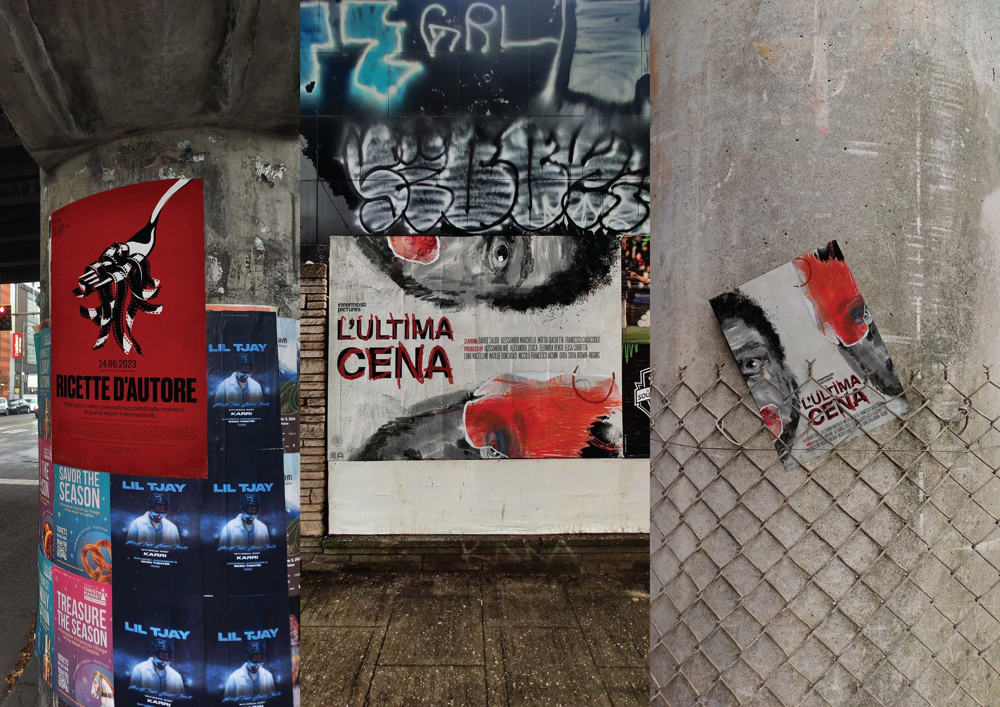

04.
Videography
L'ultima cena
Programs used:
DaVinci Resolve
DaVinci Resolve
2024



Direct and produce a short film inspired by Martin Scorsese's psychological thrillers as part of a group of eight, handling every aspect from screenplay to casting, set design, costumes, and cinematography, exploring paranoia and through a fragmented perspective that blurs the line between the protagonist's inner world and reality.


Produce three interview and workshop videos for a Politecnico di Milano graduate program, coordinating set design, lighting, and multi-camera shooting across Sony, Canon, and Nikon, achieving visual consistency through color grading with Dehancer's Agfa Chrome preset, bloom effects, and white balance correction.


Produce anniversary interview videos for two non-profit associations, ACLI, supporting people with financial and bureaucratic needs, and Lavorare Insieme, dedicated to people with severe disabilities, documenting individual stories, daily activities with the people they help, and the impact of their work on the community.
Write and direct a short horror film with a professional cast and crew, handling the full screenplay, sourcing props and costumes, managing outdoor shooting conditions, and operating professional cameras. The full edit, from raw footage to final cut, was handled independently by me.